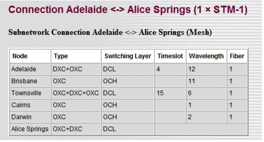

Viewing Network Information > Connection Resource Details Reports
Connection Resource Details Reports
The report gives a detailed overview of the route taken and resources used for each connection, as well as for the SONET/SDH rings, as illustrated in Figure 15-3. There are two ways to generate the report.
- Info > Export to Web Report > Connection Resource Details > By Resource Index—This generates a report based on the index of the resources used, such as fiber index, wavelength index and time slot index. This is illustrated in Figure 15-3.
- Info > Export to Web Report > Connection Resource Details > By Resource Designation—This generates a report based on the designations of the resources used.
Figure 15-3 Connection Resource Details (By Index) Table in Web Report: Example

This report includes a table for every connection accommodated in the network. If a connection is routed over different rings, or partly over rings and mesh resources, the reports includes a table for each of these subnetwork connections. Each table shows the switching points in the different layers and the resources used between these switching points.
The first row of the table indicates the connection end points and number, the connection capacity, and connection bit rate (first, second, and third columns respectively).
Subsequent rows list the nodes along the path. Each row for the "By Resource Index" table includes the following fields:
Each row for the "By Resource Designation" table includes the following fields:
- Type—The equipment used in that node
- Switching Layer—The layer at which traffic is switched in that node
- DCL—Designation of the DCL link and subdesignation(s) of the timeslot(s) on which the traffic is routed
- OCH—Designation of the OCH link and subdesignation(s) of the wavelength(s) on which the traffic is routed
- OTS—Designation of the OTS link and subdesignation of the fiber on which the traffic is routed
| Home © 1987-2007 OPNET Technologies, Inc. All Rights Reserved. This software may be covered by one or more U.S. Patents. See complete patent notice in the Legal Notices section. OPNET Support Center |